Tema 2. ¿Cómo manejar el sistema operativo Windows?
- Teclado
Anteriormente mencionamos que el teclado incluye un conjunto de teclas especiales para dar instrucciones a la computadora.
Veamos qué tipo de teclas son.

Teclas de función
Estas teclas F1, F2... F12 permiten realizar funciones específicas en cada programa, de ahí su nombre.
Ejemplo: si se está utilizando una aplicación como "Office" se puede solicitar ayuda pulsando la tecla de función "F1". Aparecerá otra ventana con la ayuda del programa. Para cerrar esa ventana, sólo presione con el ratón el icono "x" ubicado en la esquina superior derecha.
- F1= Ayuda del programa
- F2= Renombra el archivo, acceso directo o carpeta seleccionados.
- F3= Inicia una búsqueda en el directorio dónde se está.
- F4= Despliega el menú Ir a una carpeta diferente desde la barra de herramientas de una carpeta
- F5= Actualiza el contenido de la ventana seleccionada.
Teclas de desplazamiento
Como su nombre lo indica, permiten desplazarse hacia: arriba, abajo, a la izquierda o derecha dentro de un documento.
Teclas numéricas
Estas teclas son similares a las de una calculadora.
Teclas alfanuméricas
Similar al teclado de una máquina de escribir, dispone de todas las letras del alfabeto, los diez dígitos decimales y todos los signos de puntuación y acentuación, además de la barra espaciadora.
Teclas de control
| 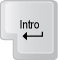 | Intro / Enter: Tecla para terminar párrafos o introducir datos. | 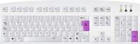 |
| 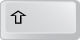 | Shift: Representado por una flecha hacia arriba, permite cambiar de minúsculas a mayúsculas y viceversa, mientras se mantiene pulsada. | 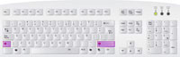 |
| Retroceder: Se representa por una flecha en sentido izquierdo. Sirve para retroceder el cursor hacia la izquierda borrando los caracteres. | 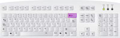 | |
| 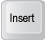 | Insert: Esta tecla permite insertar caracteres a la vez que borra el carácter actual. | 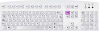 |
| 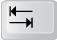 | Tabulador: Se representa mediante dos flechas en sentido contrario (izquierda - derecha). Sirve para alinear. En el sistema operativo se utiliza para desplazar el cursor por las diferentes ventanas y opciones, es sustituto del ratón. | 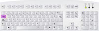 |
| 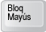 | Bloq Mayús (Cap Block): Al pulsar esta tecla se enciende uno de los leds (luces) del teclado, que indica que está activado el bloqueo de mayúsculas, lo que hace que todo el texto se escriba en mayúsculas. Para desactivarlo, haga clic de nuevo en la tecla. | 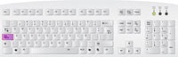 |
| 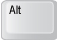 | Alt: Se usa en combinación con otras teclas para ejecutar funciones de algunas aplicaciones. Ejemplos: Alt+E = abre el menú de Edición Alt+A = abre el menú Archivo Alt+V = abre el menú Ver Alt + F4= cierra la aplicación activa, si está en el escritorio y no hay ventanas abiertas, cierra Windows. Alt + TAB = muestra las aplicaciones abiertas en una barra. Manteniendo pulsado Alt y pulsando TAB repetidamente se cambia de aplicación. |
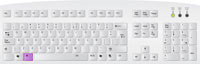 |
| 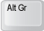 | Alt Gr: Además de servir como tecla Alt, también sirve en combinación con las teclas que incorporan símbolos. Ejemplo:
Alt Gr+Q = @ |
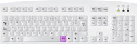 |
| 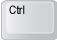 | Control: Se utiliza en combinación con otras teclas para activar distintas funciones del programa.
Control+C= es para copiar. Control+X =es para cortar. Control+V =es para pegar la información que se copió o cortó. Control+ Esc= desde cualquier aplicación nos muestra el menú inicio y la barra de tareas. |
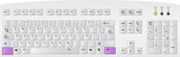 |
| 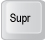 | Supr: La tecla suprimir, como bien indica su nombre sirve para borrar, ya sean datos, carpetas, archivos. |  |
| 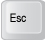 | Esc: "Escape" en inglés es una tecla que sirve para cancelar procesos y acciones en progreso, también sirve para cerrar cuadros de diálogo o ventanas. | 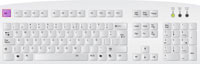 |
| 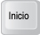 | Inicio: Esta tecla lo sitúa al principio de una línea o de un documento, dependiendo del programa que esté utilizando. | 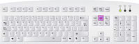 |
| 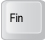 | Fin: Su función es la contraria a la tecla Inicio, y lo sitúa en el final del documento. | 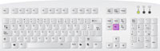 |
| 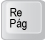 | Re Pág: Retrocede una página. | 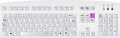 |
| 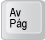 | Av Pág: Avanza una página. | 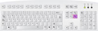 |
| 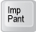 | Impr pant: También se puede ver como "Pet Sis", y significa Imprimir pantalla; su función es copiar lo que aparece en pantalla como una imagen. Se guarda en el portapapeles y lo puede pegar en cualquier documento que permita pegar imágenes. | 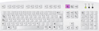 |
| 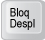 | Bloq despl: Se utiliza para detener el desplazamiento de texto. | |
| 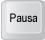 | Pausa: Se utiliza para detener acciones en proceso y así poder leer el texto de esas acciones. | 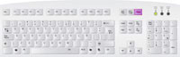 |
| 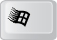 | Windows: Sólo existe en teclados diseñados para Windows, se representa por el logo, y sirve para abrir el menú de Inicio. | 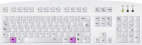 |
| Barra espaciadora: Introduce espacios entre caracteres (letras, números o caracteres especiales). | 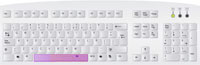 |